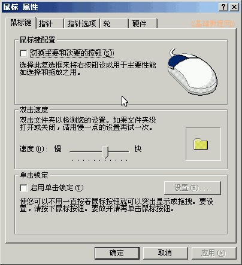
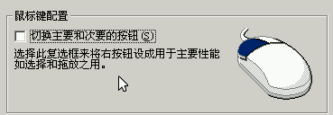
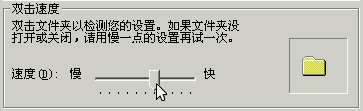
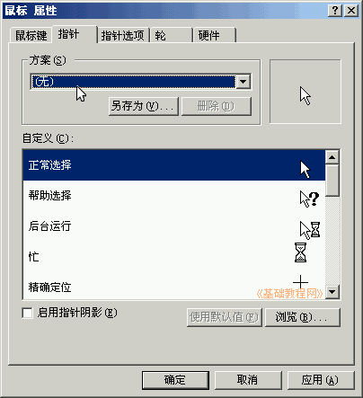
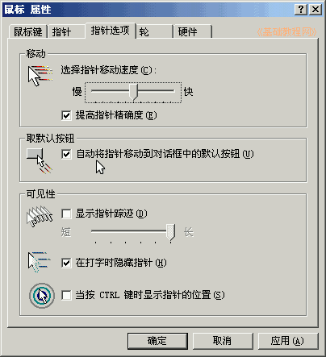
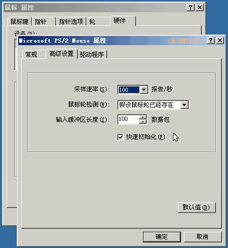

控制面板基础教程
作者：TeliuTe 来源：基础教程网
鼠标，下面我们来看一个练习；
1、鼠标选项
1）进入经典视图，点“鼠标”图标出来一个面板；
2）面板里包括鼠标键、指针、滚轮、硬件等选项；

2、设置选项
1）交换主要和次要按钮，就是交换左键和右键，如果是左手习惯，可以选中交换左右键；

2）双击速度里，如果鼠标操作比较灵巧，可以调快些，然后在旁边的图标上试试；

3）单击锁定，点一下就相当于按住鼠标，再点一下松开；
4）在“指针”标签里，可以去掉鼠标指针的阴影，如果你觉得原来的指针太单调，可以试试别的方案；

5）在“指针选项”标签里，可以加快移动速度，选择自动移到默认按钮，提高操作效率；

6）在“轮”标签里，可以设置滚轮时，滚动的行数，一般不用改；
7）在“硬件”标签里，点按钮“属性-高级设置”，可以设定鼠标的采样率精度，一般设为100即可；

本节学习了鼠标选项的基础知识，如果你成功地完成了练习，请继续学习下一课内容；
本教程由86团学校TeliuTe制作|著作权所有
基础教程网：http://teliute.org/
美丽的校园……
转载和引用本站内容，请保留作者和本站链接。